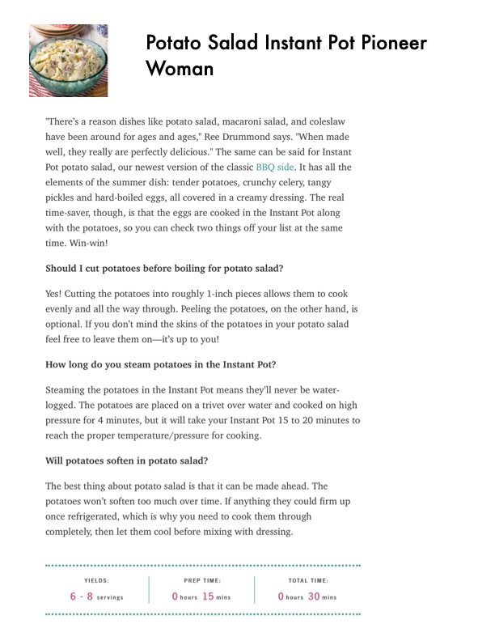

Instant Pot Potato Salad (Pioneer Woman)

Original cookbook page 197
This Instant Pot version of classic potato salad has all the elements of the summer dish: tender potatoes, crunchy celery, tangy pickles and hard-boiled eggs, all covered in a creamy dressing. A key time-saving feature is that the eggs are cooked in the Instant Pot along with the potatoes simultaneously.
Prep: 15 minutes • Cook: 4 minutes (pressure cook) + cooling time • Total: 35 minutes
Ingredients
- 4 lb russet potatoes, peeled and diced into 1-inch pieces
- 4 large eggs
- 1 cup water (for Instant Pot)
- 1 cup mayonnaise
- ½ cup sour cream
- 2 tablespoons pickle brine (from the pickle jar)
- 1 tablespoon Dijon mustard
- 1 teaspoon kosher salt
- ½ teaspoon ground black pepper
- ¼ cup chopped red onion
- ½ cup chopped dill pickles
- 2 pieces celery, chopped
- ¼ cup chopped fresh parsley
Instructions
- Add 1 cup of water to the base of the Instant Pot, then place the trivet (included with the Instant Pot) on top. Add the potatoes, then set the eggs right on top of the potatoes.
- Cover the Instant Pot with the lid and lock into place. Seal the steam release handle. Select HIGH PRESSURE and set the timer for 4 minutes.
- When the timer is up, manually release the pressure. Remove the eggs with tongs and tap each of them gently on the counter to crack the shells. Place them in a bowl of ice water and let rest for 10 minutes, then peel and chop.
- Drain the potatoes in a colander, then lay them flat on a sheet tray to cool, about 15 minutes. (The potatoes can still be slightly warm when dressed.)
- Meanwhile, in a large bowl, mix together the mayonnaise, sour cream, pickle brine, Dijon mustard, salt and pepper.
- Stir in the red onion, pickles, celery and parsley.
- Fold in the cooled potatoes and chopped eggs. Refrigerate until ready to serve.
📝 Recipe Notes
COOKING TIPS: Cut potatoes into roughly 1-inch pieces for even cooking; peeling is optional. Cook's Tip: You can use a mix of whatever fresh herbs you have on hand. Dill, parsley, chives or even tarragon all work well in this salad! Recipe by Ree Drummond (The Pioneer Woman). Combined recipe from pages 197-199.
Recipe #197 from collection